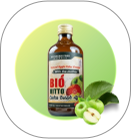

Pertanyaan Seputar Cuka Apel "Berlian"

Apakah Cuka Apel aman dan Efektif?
Cuka apel umumnya aman dan efektif jika dikonsumsi dengan benar. Namun bagi beberapa orang, dan kasus diet khusus, Cuka apel dapat menimbulkan masalah pencernaan, dan kerusakan gigi Penting untuk mengonsumsi cuka apel dengan air, mengikuti anjuran takaran yang ada, mulai dengan tujuan moderat dan berkonsultasi dengan ahli medis jika Anda memiliki kondisi kesehatan tertentu.

Cuka Apel Berlian
Rp35.000
Apakah Cuka Apel Berlian bisa membantu menurunkan berat badan?
Ya, Cuka Apel Berlian dapat membantu dalam program penurunan berat badan ketika dikombinasikan dengan pola makan sehat dan olahraga teratur.
Bagaimana cara mengonsumsi Cuka Apel Berlian dengan benar?
Campurkan 1-2 sendok makan Cuka Apel Berlian dengan segelas air hangat. Konsumsi 30 menit sebelum makan untuk hasil optimal.
Apa saja manfaat Cuka Apel Berlian untuk tubuh?
Cuka Apel Berlian memiliki berbagai manfaat seperti membantu pencernaan, mengontrol gula darah, menurunkan kolesterol, dan mendukung sistem kekebalan tubuh.
Apakah Cuka Apel Berlian halal?
Ya, Cuka Apel Berlian telah memiliki sertifikat halal dan aman untuk dikonsumsi.
GET YOUR ANSWER
Pertanyaan Umum
Apa manfaat utama dari Cuka Apel Berlian?
Cuka Apel Berlian kaya akan enzim alami dan probiotik yang membantu meningkatkan sistem pencernaan, mengontrol kadar gula darah, memperbaiki kesehatan kulit, serta mendukung program diet secara alami.
- Membantu melancarkan sistem pencernaan
- Menjaga keseimbangan kadar gula darah
- Mendukung program penurunan berat badan
- Meningkatkan metabolisme tubuh
- Membantu detoksifikasi alami
Apakah produk Cuka Apel Berlian terbuat dari apel organik?
Ya, Cuka Apel Berlian diproduksi dari 100% apel organik pilihan yang dibudidayakan tanpa pestisida dan bahan kimia berbahaya. Proses fermentasi dilakukan secara alami selama 6-8 bulan untuk menghasilkan kualitas terbaik.
Kami bekerja sama dengan petani organik bersertifikat untuk memastikan kualitas bahan baku yang konsisten dan aman untuk dikonsumsi jangka panjang.
Bagaimana rasa Cuka Apel Berlian?
Cuka Apel Berlian memiliki rasa asam yang segar dan tidak terlalu tajam, dengan aroma buah apel yang khas. Berbeda dengan cuka sintetis, produk kami memiliki rasa yang lebih lembut dan mudah diterima lidah.
Untuk pemula, kami sarankan mencampurnya dengan madu atau air hangat untuk mengurangi tingkat keasaman dan membuat rasa lebih nikmat.
Apakah Cuka Apel Berlian aman dikonsumsi setiap hari?
Ya, Cuka Apel Berlian aman dikonsumsi setiap hari dengan dosis yang tepat. Kami merekomendasikan 1-2 sendok makan (15-30ml) per hari, sebaiknya dicampur dengan segelas air atau diminum 30 menit sebelum makan.
Namun, untuk penderita maag atau asam lambung tinggi, sebaiknya berkonsultasi dengan dokter terlebih dahulu atau mulai dengan dosis yang lebih kecil.
Berapa lama manfaat Cuka Apel Berlian bisa dirasakan?
Manfaat Cuka Apel Berlian umumnya dapat dirasakan dalam waktu yang bervariasi tergantung kondisi tubuh dan tujuan penggunaan:
- Pencernaan: 1-2 minggu penggunaan rutin
- Penurunan berat badan: 4-6 minggu dengan diet seimbang
- Kontrol gula darah: 2-3 minggu penggunaan konsisten
- Kesehatan kulit: 3-4 minggu penggunaan rutin
Untuk hasil optimal, konsumsi secara rutin dan kombinasikan dengan gaya hidup sehat.
Apakah anak-anak boleh mengonsumsi Cuka Apel Berlian?
Cuka Apel Berlian dapat dikonsumsi oleh anak-anak di atas 5 tahun dengan dosis yang disesuaikan. Untuk anak-anak, kami sarankan:
- Usia 5-10 tahun: 1/2 sendok teh dicampur air atau jus
- Usia 10-15 tahun: 1 sendok teh dicampur dengan air
- Selalu encerkan dengan air atau minuman lain
- Konsultasikan dengan dokter anak jika ragu
Hindari memberikan dalam bentuk murni karena dapat mengiritasi tenggorokan anak.
Bagaimana cara menjadi Reseller?
Bergabung menjadi reseller Cuka Apel Berlian sangat mudah! Berikut langkah-langkahnya:
- Hubungi tim marketing kami melalui WhatsApp
- Isi formulir pendaftaran reseller
- Minimal pembelian pertama 10 botol
- Dapatkan margin keuntungan hingga 40%
- Support marketing materials gratis
- Training product knowledge
Kami juga menyediakan sistem dropship untuk yang ingin memulai tanpa modal besar. Hubungi: +62 812-3456-7890